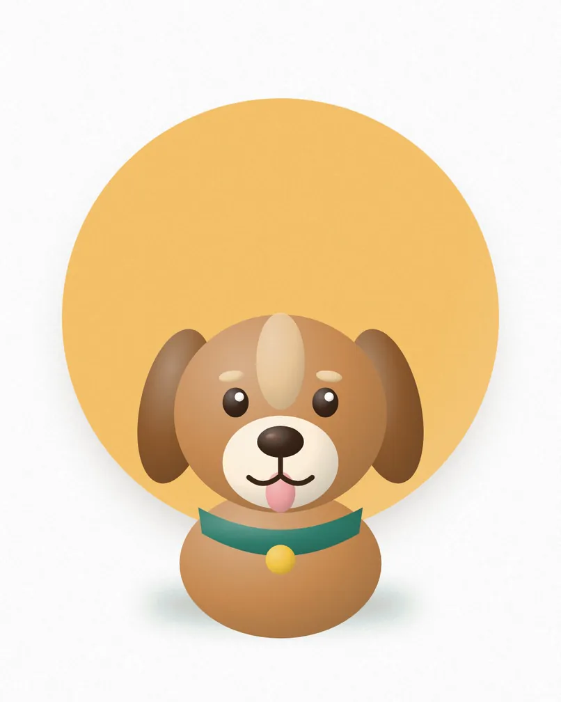
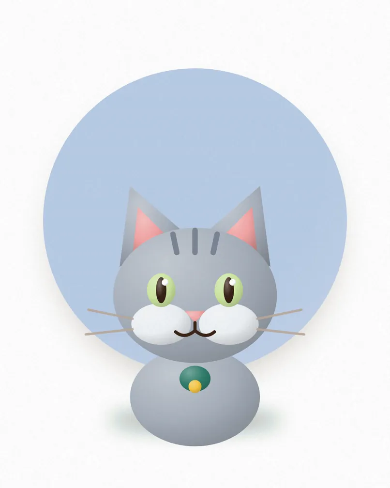
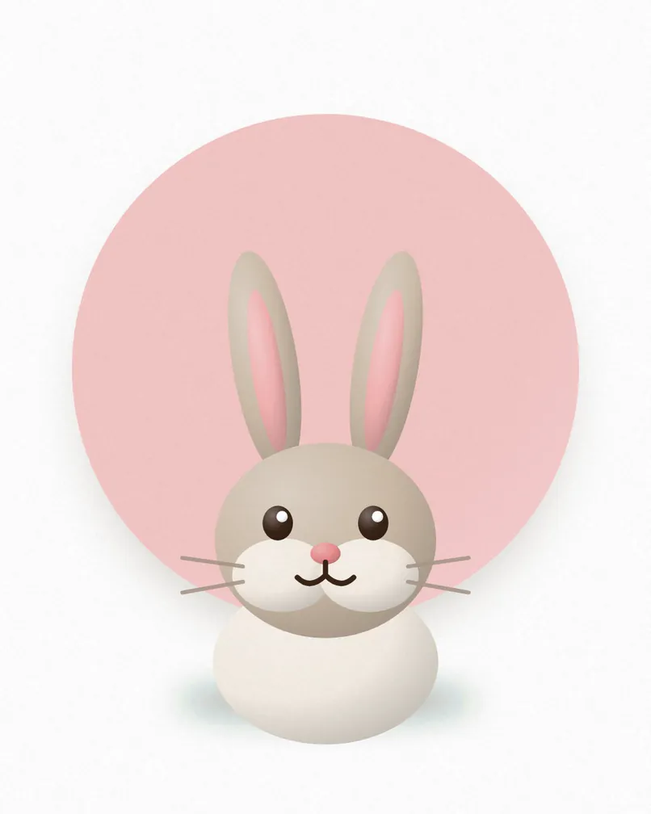

Biscuit
Age 3 · Labrador crossGentle and clumsy, loves long walks and chasing tennis balls.
Tags show if an animal is good with children, good with other pets, or needs a quiet home. Ask us about any animal.
Rescued, rehabilitated and ready for a home.

Gentle and clumsy, loves long walks and chasing tennis balls.
A calm senior who wants a warm bed and a slow stroll.
Bouncy, bright and learning fast. Best with a training-minded family.
Affectionate and a little shy at first. Warms up with treats.
Independent, cuddly and everything between.

Playful and chatty. Follows you from room to room.
A lap cat who purrs the moment you sit down.
Full of energy, loves toys and climbing the curtains.
Gentle and wise. Happiest with one calm person.
Rabbits, guinea pigs and other little friends.

Curious and gentle. Bonded with Hazel, so they go home together.
Calm, loves a cuddle and a dandelion leaf.
Chirpy and sociable, needs a friend of her own kind.
Quiet and sweet, a perfect first small pet.
Injured and orphaned wild animals, cared for until release.

Recovering from a wing injury. Release planned in the spring.
Found as a chick and hand-reared by our wildlife team.
A small owl with a big personality, almost ready to fly free.
Quiet and watchful, on the mend after a road accident.
Send us a message and we will reply within a few days.
| Monday to Friday | {{hours_weekdays}} |
|---|---|
| Saturday | {{hours_saturday}} |
| Sunday | {{hours_sunday}} |